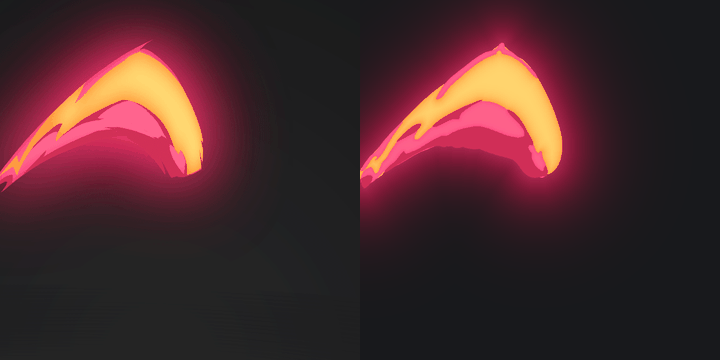
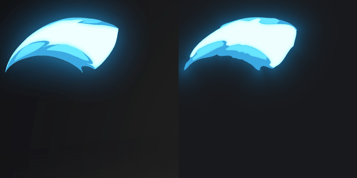
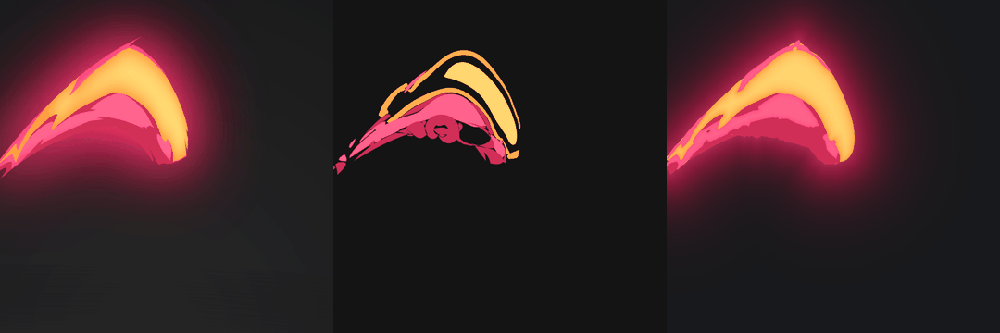
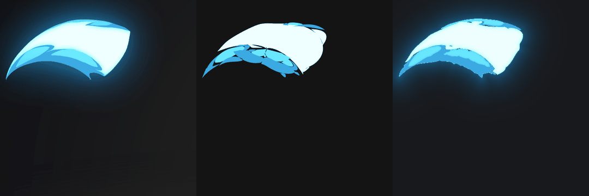

Swirl Slash Shapes
V3 thêm bước tự làm đều nét theo kiểu Illustrator: nối nét, giữ góc thật, làm trơn độ cong, gộp đoạn và bỏ điểm neo thừa. Hình và màu giữ như v2. Bản v2 và v1 ở cuối trang.
Cập nhật băng (mượt tối đa): bỏ đường tối giữa lưỡi trắng và ngọn lửa xanh (đo lại thì đó chỉ là 2 px pha màu, không phải nét), bỏ viền sáng lấm tấm quanh mép, làm trơn mạnh hơn (σ 7 px), gộp đoạn dài hơn và nối khe tới 2,5 px.
Tự làm đều nét (Smooth & Simplify)
Ghép từ cách Illustrator (Simplify: độ bám đường và ngưỡng góc), Potrace / Image Trace (ngưỡng góc và gộp đoạn cong) và lý thuyết "fair curve" (đường đẹp là đường có độ cong đổi ít nhất). Mỗi viền đi qua 6 bước:
1 · Nối nét
Khe hở dưới 1,5 px trong cùng một lớp được nối liền, mảnh vụn bị bỏ, giống lệnh Join.
2 · Giữ góc thật
Một điểm chỉ là góc khi nó nhọn ở cả hai tầm nhìn: sát (±4 px) và rộng (±8 px). Răng cưa nhỏ chỉ nhọn ở tầm sát nên bị loại.
3 · Làm trơn độ cong
Giữa hai góc, đường được kéo sao cho độ cong thay đổi ít nhất, như kéo một thanh dẻo qua các điểm (bend tool). Phần diện tích bị co được bù lại.
4–5 · Ít điểm neo
Đường được fit bằng Bézier, rồi hai đoạn liền nhau được gộp làm một khi đoạn gộp vẫn bám đường trong 0,9 px. Góc nào gãy dưới 35° thì nắn thành neo trơn.
6 · Tay nắm gọn
Tay nắm dài tối đa 0,45 lần dây cung (đường vẽ tay đo được 0,21–0,38), nên không sinh vòng hay phình.
| Lớp | Gốc (vẽ tay) | v2 | v3 |
|---|---|---|---|
| Lửa · vàng (gồm dải cam ở mép) | 53 / 2.82 | 53 / 5.3 / 1.41 | 45 / 0.3 / 0.73 |
| Lửa · hồng | 80 / 0.87 | 88 / 8.3 / 10.21 | 80 / 0.0 / 0.71 |
| Lửa · đỏ sẫm | 89 / 1.57 | 78 / 7.0 / 2.87 | 62 / 0.3 / 1.00 |
| Băng · trắng (lưỡi băng) | 29 / 0.28 | 41 / 3.7 / 1.24 | 23 / 0.0 / 0.41 |
| Băng · cyan (lông vũ) | 40 / 0.63 | 34 / 2.0 / 0.35 | 36 / 0.0 / 0.60 |
| Băng · xanh (ngọn lửa xanh) | 56 / 0.50 | 60 / 6.3 / 2.42 | 34 / 0.3 / 0.48 |
| Băng · xanh sẫm (viền) | 41 / 5.33 | 30 / 3.0 / 0.99 | 19 / 0.0 / 0.36 |
Gộp các frame dựng lại
Trái là bản gốc, phải là v3. Bấm "Gốc | v2 | v3" để thấy bản trước ở giữa. Mỗi frame vẫn được dựng độc lập.


Duyệt từng lớp màu
Ảnh frame: gốc · v2 hình phẳng · v3 hình phẳng · v3 hoàn chỉnh (gradient và quầng sáng). Mỗi lớp có ba ô: mục tiêu · v3 hình phẳng · đường pen v3. Phím ← → để chuyển frame. Bấm Đạt / Cần sửa, ghi chú, rồi bấm "Sao chép nhận xét" để gửi lại.
Bản cũ: v2 (gradient + tô chồng) và v1

